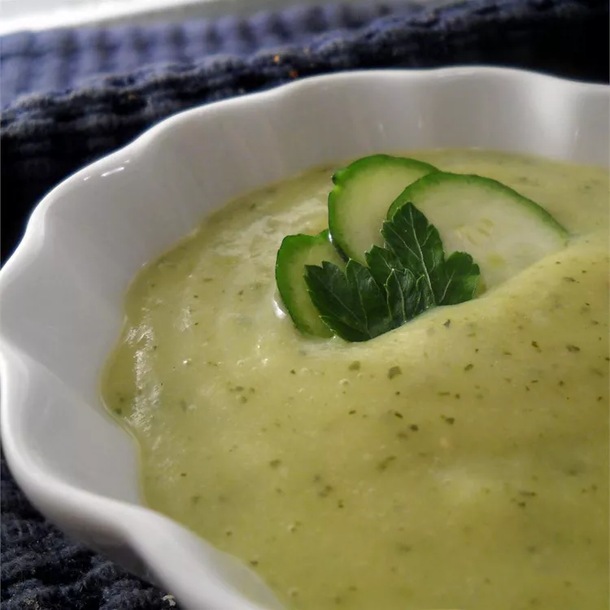

Crema de Calabacines

Esta excelente receta de crema de calabacín la aprendí mientras vivía en España
de una señora de 75 años en Madrid. Es excelente, fácil, bajo en grasas y barato,
además de una maravillosa comida reconfortante. Varíe la receta agregando zanahorias,
espinacas u otras verduras. Aumente el volumen de las papas para obtener una sopa más espesa.
Adorne con picatostes, pimentón y cebollino. ¡Delicioso!
Ingredientes
- 5 Calabacines
- 2 Papas Criollas
- 1 Cebolla
- Queso Filadelfia
- Caldo de pollo en polvo
- Sal y pimienta
Pasos
- Limpiar y cortar en cuartos los calabacines y las patatas. Pelar y picar la cebolla. En una olla grande, hierva los calabacines, las patatas y la cebolla en agua (apenas cubriéndolos) hasta que estén muy tiernos. Escurrir las verduras, pero conservar el caldo.
- En una licuadora, o con una batidora de mano, haga puré el queso, el calabacín, las papas, la cebolla y el caldo mientras agrega el caldo, hasta alcanzar la consistencia deseada. (Si está usando una licuadora, hágalo en dos tandas).
- Vierta la mezcla nuevamente en una olla grande y déjela hervir. Sal y pimienta para probar.